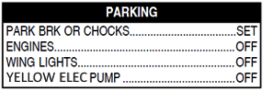
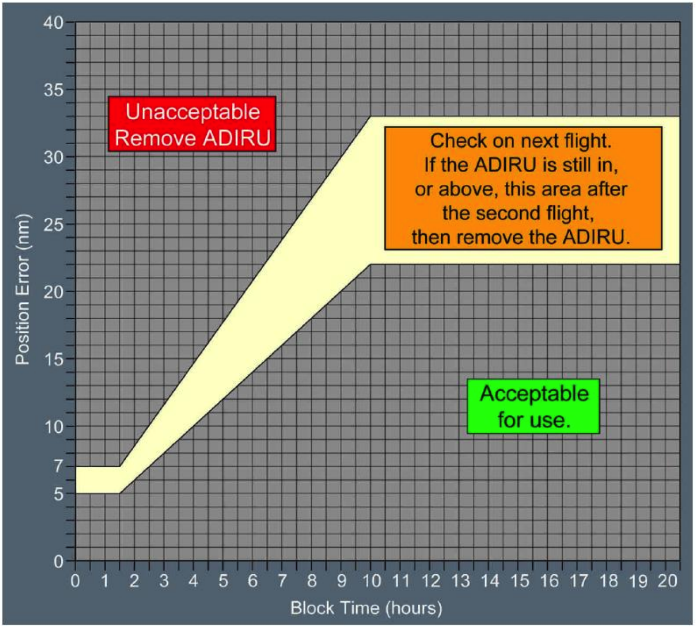

Water could get into the avionics ventilation system. To avoid it, turn VENTILATION EXTRACT to OVRD. Packs are required to provide ventilation in this case.
Ask for chocks before engine shutdown if low ACCU pressure.
Avoid parking brake if one brake temp is >500ºC (or 350ºC with fans).

Start passengers + cargo/baggage deboarding.

FOB + Fuel Used = should match with Departure Fuel. If unusual discrepancy, maintenance action is due.
NOTE DOWN ELAPSED TIME AND FUEL USED.
At this point, you can start over start over if doing another flight, or go to Securing the Aircraft flows.